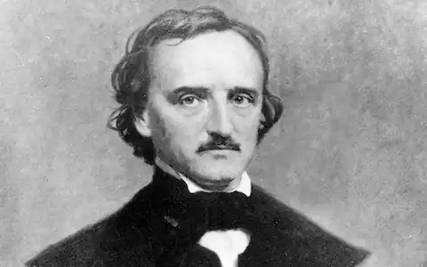

ЕДГАР АЛЛАН ПО
(1809-1849)
Едгар Аллан По — американський поет, прозаїк, критик, редактор, один з перших професійних письменників США, який жив винятково літературною працею, який знав славу й популярність, але якого не відразу зрозуміли й оцінували на батьківщині. Едгар По народився у Бостоні 19 січня 1809 року в родині акторів. Походив з давнього ірландського роду. Коли Едгару було лише два роки, його мати й батько майже одночасно померли від чахотки, залишивши трьох дітей. Едгара всиновив багатий шотландський купець з Річмонда Джон Аллан, меньшу дитину — шотландець Меккензі, а старшого хлопчика Вільяма взяв дід, генерал По. Маленький Едгар вирізнявся серед дітей жвавим розумом, і дружина Аллена, зачарована дитиною, умовила свого чоловіка всиновити його. Вона та її сестра Анна Валентайн, "тітонька Ненсі", оточили хлопчика турботою і любов'ю. Едгар опинився в багатому домі. Його названа мати любила хлопчика до самої своєї смерті. У віці п'яти-шести років Едгар умів читати, писати, малювати, декламувати вірші на розвагу гостей за обідом. Він був вдягнений, як маленький принц, мав поні, на котрому їздив верхи, мав власних собак, який супроводжували його, і ліврейного грума; завжди мав у достатній кількості кишенькові гроші, і в дитячих іграх у нього завжди була якась улюблениця, яку він засипав подарунками. Названий батько пишався прийманим сином, хоча часом був запальним і суворо карав хлопчика. Едгар не завжди слухався містера Аллена і, коли йому загрожувало покарання іноді, проявляв надзвичайну винахідливість. Якось він попрохав міссіс Аллен захистити його, але вона відповіла, що не може в це втручатися. Тоді він пішов у садок, назбирав цілий жмут дубців, повернувся додому й мовчки простягнув їх містерові Аллену. На запитання: "Навіщо це?" він відповів "Щоб висікти мене". Містер Аллан був скорений цією мужністю. Перебування з Алленами в Англії (1815— 1820), де Едгар По навчався в престижному лондонському пансіонаті, прищепило йому любов до англійської поезії і слова взагалі. Чарлз Діккенс згодом відгукнувся про письменника як про єдиного хранителя "граматичної й ідіоматичної чистоти англійської мови" в Америці. У 1820 році Аллени повертаються на батьківщину до Річмонда. Тут у По з'являються нові друзі, з якими він мандрує, у тому числі й на човнах. У ньому рано прокинувся інтерес до пригод, пристрасть до всього незазнаного. Після повернення з Англії Едгара віддали до Англійської класичної школи, де дуже добре викладали англійську літературу, що стимулювало творчий талант Едгара. До 13-14 років його поетичні спроби набули зрілості. Згодом він поїхав вчитися до Віргінського університету (1826), однак, незабаром змушений був його покинути, бо наробив "боргів честі". У житті Едгара По було кілька важливих поворотів. Одним із них, що значною мірою визначив його долю, було рішення вісімнадцятирічного Едгара, яке він прийняв у "безсонну ніч з 18 на 19 березня 1827 року". Обставини цього рішення не зовсім з'ясовані, але однієї лютневої ночі 1827 року між ним і вітчимом сталася бурхлива, важка розмова. Блискучий студент Віргінського університету, юний поет, який подає надії, улюбленець товаришів, Едгар повівся не кращим чином. Певно, в університеті Едгар захоплювався грою в карти і вліз у борги, які не зміг віддати; великий програш поставив його у вкрай скрутне становище, з якого його міг вивести тільки багатий і впливовий опікун. Під час розмови опікун, можливо, висунув умови, що він сплатить "борг честі", але Едгар віднині повинен буде підкорятися його волі, слідувати його порадам і вказівкам. Опікун з його дрібною скаредністю поставив свого приймака, палку й горду натуру, у скрутне становище. До цього приєдналися гіркі переживання, викликані грубим втручанням опікуна в інтимні почуття свого вихованця. Юнак не міг змирити гордині й залишив багатий дім, у якому виховувався,— "маленький зухвалий вискочка" у відповідь на безкомпромісну вимогу відповів рішучим "ні", і "було в його непохитності і щось жорстоке, "невдячне", і, проте, це було гідне й мужнє рішення. Поклавши на одну чашу ваг благополуччя, а на іншу — гордість і талант, він зрозумів, що останнє важливіше, і віддав перевагу славі і честі. Більш того, хоч він і не міг знати усього наперед, але тим самим були обрані голод і злидні. Утім, злякати його не змогли б і вони". Так вперше чітко й різко виявив себе основний конфлікт у житті Едгара Аллана По — конфлікт творчої, шляхетної особистості й грубого гендлярського утилітаризму, що все підпорядковує зиску. Те, що було сконцентровано в натурі та поводженні опікуна, незабаром стало для Едгара системою непохитних сил, що виражають провідні інтереси й тенденції американського суспільства. Починається смуга поневірянь. Він вирушає до Бостона й там на свій кошт видає першу збірку "Тамерлан та інші вірші", яка майже не мала попиту. Безпросвітна бідність, що доходила до повних злиднів, не могла не пригнічувати Едгара По. Вона викликала неймовірну нервову напругу, яку що ближче до кінця життя, то все частіше він намагався зняти спиртним і наркотиками. Потім були заняття у військовій академії Вест-Пойнт (1830), що тривали лише півроку. Та попри досить часті періоди бездіяльності, По працював з величезною завзятістю, про що переконливо свідчить його велика творча спадщина. Головна причина його бідності — "занадто мала винагорода, що він одержував за свою роботу". Лише найменша частина його творчості — журналістика — мала якусь цінність на тодішньому літературному ринку. Найкраще з того, що він створив своїм талантом, майже не цікавило покупців. Смаки, що панували в ті роки, недосконалість законів про авторське право й постійний потік до країни англійських книг, позбавили твори По всякої надії на комерційний успіх. Він був одним з перших американських письменників-професіоналів і існував тільки за рахунок літературної праці та праці редактора. До своєї праці й до праці своїх побратимів він висував безкомпромісні вимоги. "Поезія для мене,— писав він,— не професія, а пристрасть, до пристрасті ж слід ставитися з повагою — її неможливо пробуджувати в собі за бажанням, думаючи лише про жалюгідну винагороду ще більш жалюгідних похвал юрби". Перше визнання, яке допомогло Едгару По повірити в себе, відбулось у 1832 році, коли місцевий журнал оголосив конкурс, у якому він отримав приз за оповідання "Рукопис, знайдений у пляшці", і звернув на себе увагу відомого в той час письменника Джона Кеннеді. Улітку 1835 року Едгар По починає працювати в журналі "Південний літературний вісник". Це зміцнило його репутацію. Однак виснажлива робота поглинала весь час, позбавляла можливості серйозно творити. Зустріч Едгара По із семирічною двоюрідною сестрою Вірджинією, яка через шість років стала його дружиною, мала глибокі наслідки для його життя. Ця зустріч, а потім одруження дуже добре вплинули на По. Вірджинія була незвичайною людиною, вона "втілювала в собі єдино можливий компроміс з реальністю в його стосунках з жінками,— таких складних і витончених". Тяжка спадковість, сирітство, непосильна боротьба з перешкодами, що стояли на шляху волелюбного духу й високих устремлінь, зіткнення з життєвими дрібницями, хвороба серця, Надзвичайна вразливість, травмована й неврівноважена психіка, а головне — неможливість розв'язання основного життєвого конфлікту вкорочували йому віку. Хвороба й передчасна смерть Вірджимії стали для нього страшним ударом, початком глибокої душевної недуги. Смерть По досі залишається таємницею. У вересні 1849 року він з великим успіхом читав лекцію про "Поетичний принцип" у Річмонді, відкіля виїхав, маючи півтори тисячі доларів у кишені. Що сталося потім — незрозуміло, але його було знайдено в одній таверні в тяжкому, хворобливому стані, потім перевезено до Балтімора в лікарню, де він невдовзі й помер. Творчість Едгара По Можна розглядати героїв і героїнь творів Едгара По всього лише як багатоликі іпостасі самого По й улюблених його жінок, двійників, чий вигадковий світ наповнював він стражданнями, намагаючись полегшити у такий спосіб тягар сумнівів і розчарувань, що обтяжували його власне життя. Палаци, сади і покої, населені цими примарами, вражають розкішним оздобленням, воно — ніби вигадлива карикатура на злиденність справжніх його мешканців і безвідрадну обстановку тих місць, куди доля закидала письменника. Творчість письменника, хоч би як повно відбивалася в ньому його особистість, не обмежується "психологічною автобіографією". Як новеліст По всерйоз показав себе в розповіді "Рукопис, знайдений у пляшці" (1833). У традиції незвичайних морських подорожей написана розповідь "Падіння в Мальстрем" (1841) і єдина "Повість про пригоди Артура Гордона Піма" (1838). До "морських" творів належать розповіді про пригоди на суші й у повітрі: "Щоденник Джуліюса Родмена" — вигаданий опис першої подорожі через Скелясті гори Північної Америки, зробленої цивілізованими людьми (1840), "Незвичайні пригоди такого собі Ганса Пфааля" (1835), "Історія з повітряною кулею" (1844) про нібито здійснений переліт через Атлантику. Ці твори — не тільки історії про незвичайні пригоди, але й пригоди творчої фантазії, алегорії постійної драматичної подорожі в незвідане. Завдяки ретельно розробленій системі деталей досягалося враження вірогідності й матеріальності вимислу. У "Висновку" до "Ганса Пфааля" По сформулював принципи того виду літератури, що згодом назвуть науково-фантастичним. Художній зміст таких розповідей, як "Лі-гейя" (1838), "Падіння будинку Ашерів" (1839), "Маска Червоної смерті" (1842), "Колодязь і маятник" (1842), "Чорний кіт" (1843), "Барило амонтільядо" (1846), звичайно, аж ніяк не вичерпується картинами жахів, фізичних страждань. Зображуючи різні екстремальні становища й виявляючи реакції героїв на них, письменник доторкнувся до тих ділянок людської психіки, що їх нині вивчає наука. Перший свій виданий збірник розповідей Едгар По назвав "Розповідями гротесків і арабесок". Назва творів спрямовує читача й критика, орієнтує їх, дає їм ключ від входу у сферу, створену творчою фантазією. їх можна назвати "розповідями таємниць і жахів". Коли Едгар По писав свої розповіді, подібний жанр був а Америці дуже поширений, і він знав його особливості й кращі зразки, знав про його популярність і причину успіху в читача. Едгар По був фактично засновником детективного жанру, дав низку класичних його зразків.